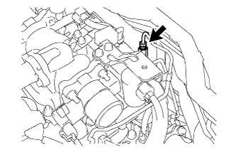
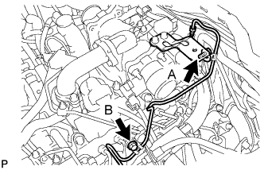
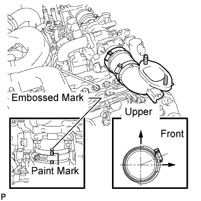
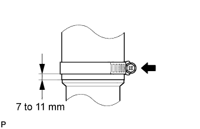
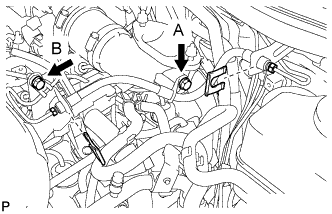
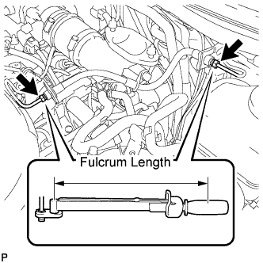
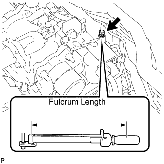
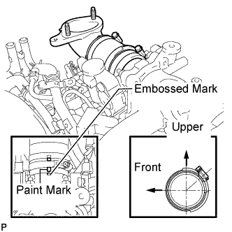
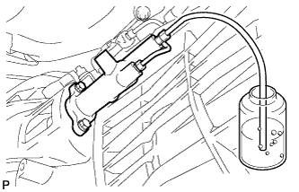

DIESEL THROTTLE BODY > INSTALLATION |
| 1. INSTALL DIESEL THROTTLE BODY ASSEMBLY LH |
 |
Install a new gasket to the intake pipe.
Install the throttle body with the 2 bolts and 2 nuts.
Connect the throttle position sensor connector.
Connect the throttle motor connector.
| 2. INSTALL DIESEL THROTTLE BODY ASSEMBLY RH |
 |
Install a new gasket to the intake pipe.
Install the throttle body with the 2 bolts and 2 nuts.
Connect the throttle position sensor connector.
Connect the throttle motor connector.
| 3. INSTALL TUBE CONNECTOR TO FLEXIBLE HOSE TUBE (for Manual Transmission) |
 |
Temporarily install the flare nut of the tube connector to flexible hose tube to the clutch tube to release cylinder 2 way by hand.
 |
Temporarily install the tube connector to flexible hose tube with the 2 bolts.
Tighten the bolt labeled A.
| 4. INSTALL AIR TUBE SUB-ASSEMBLY LH |
 |
Install the air tube to the throttle body.
Align the embossed mark of the throttle body with the paint mark of the No. 4 air hose.
 |
Tighten the hose clamp so that it is 7 to 11 mm (0.276 to 0.433 in.) from the end of the hose as shown in the illustration.
| 5. INSTALL CLUTCH HOSE (for Manual Transmission) |
 |
Connect the clutch hose to the air tube with the bolt labeled A.
Temporarily install the clutch hose to the clutch master cylinder tube to flexible hose tube and tube connector to flexible hose tube, and fix it in place with the 2 clips.
Tighten the bolt labeled B.
Tighten the flexible hose tube.
 |
Using a 10 mm union nut wrench, tighten the 2 flare nuts of the flexible hose tube.
 |
Using a 10 mm union nut wrench, tighten the flare nut of the flexible hose tube.
| 6. INSTALL AIR TUBE SUB-ASSEMBLY RH |
 |
Install the air tube to the throttle body.
Align the embossed mark of the throttle body with the paint mark of the No. 4 air hose.
Tighten the hose clamp so that it is 7 to 11 mm (0.276 to 0.433 in.) from the end of the hose as shown in the illustration.
| 7. CONNECT NO. 2 ENGINE OIL LEVEL DIPSTICK GUIDE |
 |
Connect the dipstick guide with the bolt.
| 8. INSTALL INTERCOOLER ASSEMBLY |
Install the intercooler (Click here).
| 9. FILL BRAKE FLUID RESERVOIR |
Fill the reservoir with brake fluid.
| 10. BLEED CLUTCH LINE |
 |
Remove the release cylinder bleeder plug cap.
Connect a vinyl tube to the bleeder plug.
Depress the clutch pedal several times, and then loosen the bleeder plug while the pedal is depressed.
When fluid no longer comes out, tighten the bleeder plug, and then release the clutch pedal.
Repeat the previous 2 steps until all the air in the fluid is completely bled.
Tighten the bleeder plug.
Install the bleeder plug cap.
Check that all the air has been bled from the clutch line.
| 11. CHECK FLUID LEVEL IN RESERVOIR |
Check the fluid level.
If the brake fluid level is low, check for leaks and inspect the disc brake pad. If necessary, refill the reservoir with brake fluid after repair or replacement.
| 12. INSPECT FOR CLUTCH FLUID LEAK |
| 13. CONNECT CABLE TO NEGATIVE BATTERY TERMINAL |
| 14. CHECK DIESEL THROTTLE BODY ASSEMBLY |
Inspect the diesel throttle valve.
Turn the engine switch on (IG).
Turn the engine switch off and wait 5 seconds.
Connect the intelligent tester to the DLC3.
Turn the engine switch on (IG).
Turn the intelligent tester on.
Enter the following menus: Powertrain / Engine / Data List / All Data / Diesel Throttle Angle.
Check that the value of "Diesel Throttle Angle" is within the specification.
| Tester Display | Specified Condition |
| Diesel Throttle Angle | Throttle Angle: -5 to 5% |
Enter the following menus: Powertrain / Engine / Data List / All Data / Throttle Close Learning Val.
Check that the value of "Throttle Close Learning Val" is within the specification.
| Tester Display | Specified Condition |
| Throttle Close Learning Val. | 14.25 to 21.25 deg |